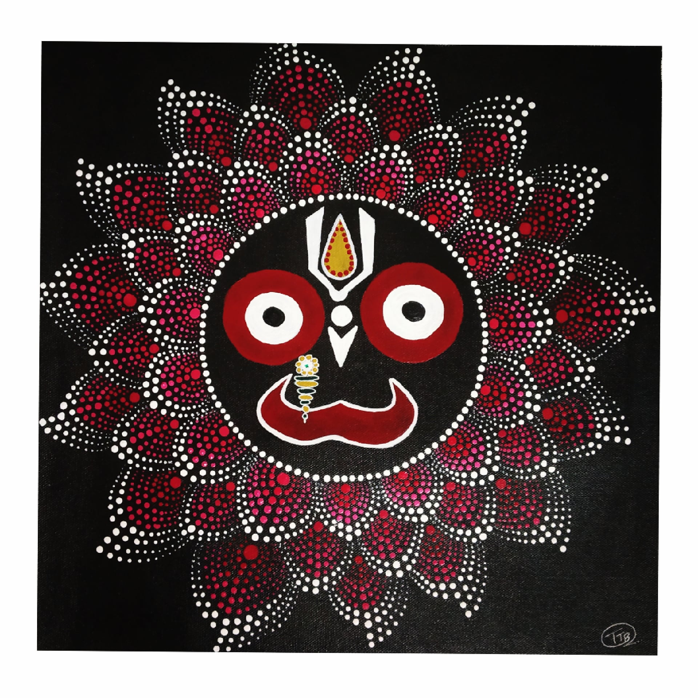

LORD JAGANNATH
In frame is the dot mandala painting of Lord Jagannath in a lotus.
before going into detail i would like to describe some things about this painting.
For those who don’t know, Lord Jagannath is a Hindu deity worshiped by devotees in India and across the globe.
The world famous Lord Jagannath temple is located in Puri, Odisha.
Materials Required :
1 Canvas (16*16) inch.
paint brush.
black ,red, ochre yellow, white, pink(white+red) acrylic colour’s.
Mandala dot art tool set.
Any circular object or a compass.
steps one can follow(if needed) :
First take a plain canvas and tape it if you eant white border or else you can direct paint it whole black.
LAfter it dries, make the face of lord jagannath using a pencil.
After all this is done paint the face with proper colours looking at the painting above.
Then start with the dot art, with red being the inner dot slowly lightening to pink(red+white) following the same pattern
throughout the painting.
After all this is done your painting will be complete.